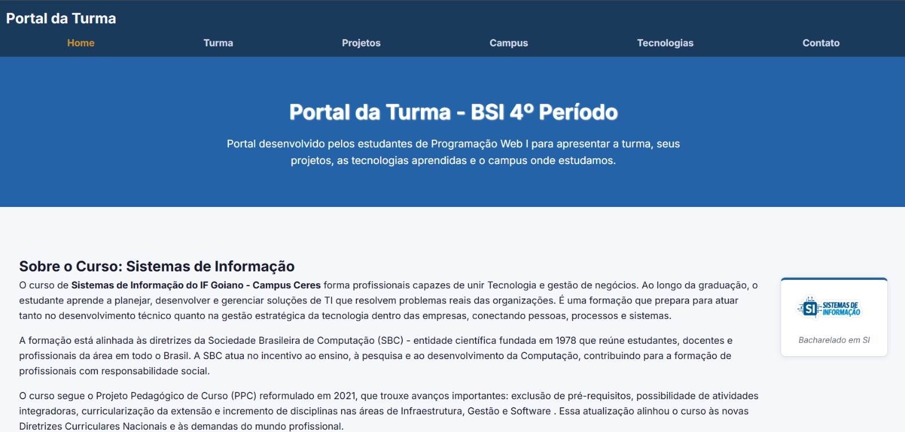
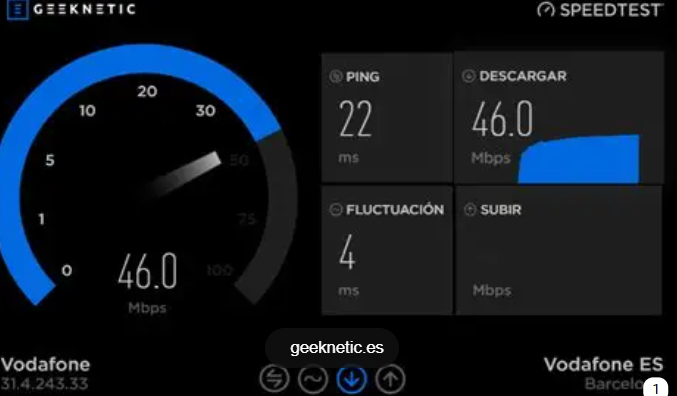
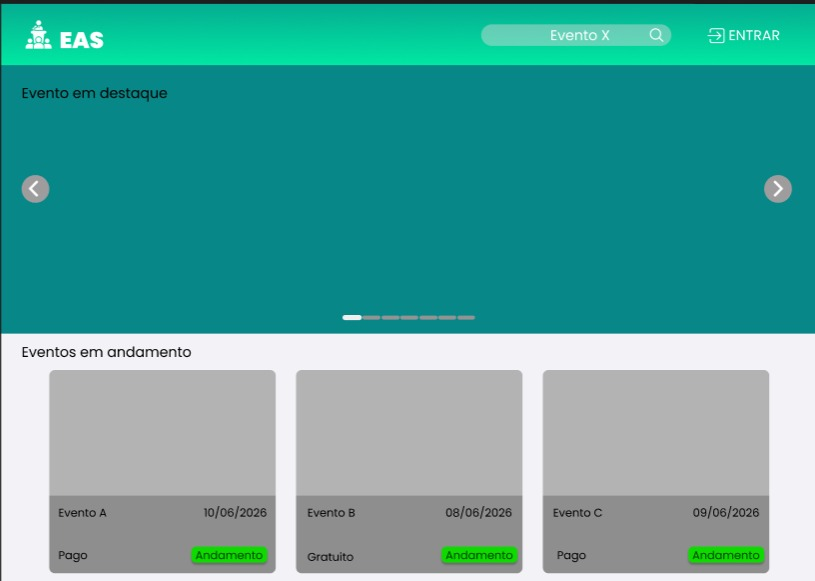
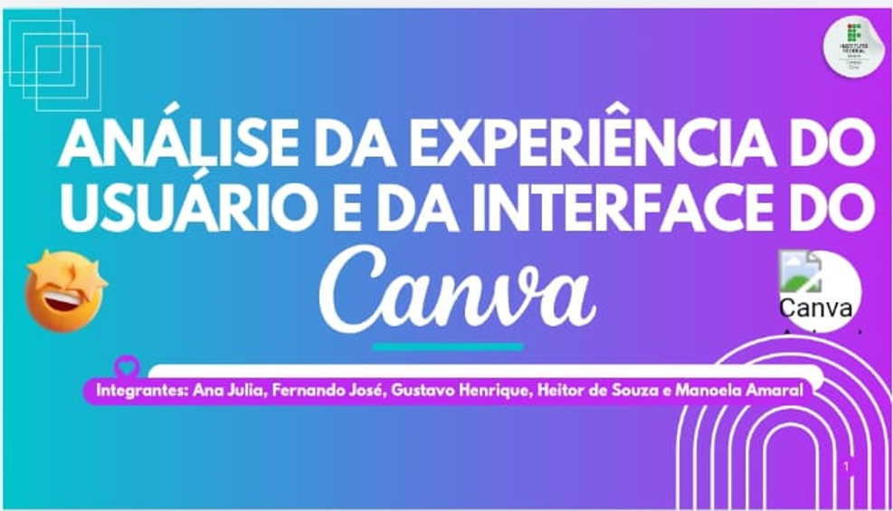
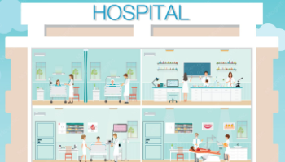

Portal da Turma, Feito pelos alunos de sistemas
Site com várias páginas. Conceitos aplicados: estrutura HTML, semântica e CSS.
- HTML
- CSS

Site com várias páginas. Conceitos aplicados: estrutura HTML, semântica e CSS.

O trabalho teve como objetivo fazer a medição de velocidade do WiFi, medidos em diferentes lugar, e diferentes distancias do roteador, e criamos um gráfico de desemprenho.

EAS é um sistema de gerenciamento de eventos acadêmicos e externos. O projetamos visando melhorar a experiência dos usuarios ao procurar e/ou cadastrar eventos.

Foi feito uma analise da experiência do usuário e da interface da plataforma de deign grafico online.

Desenvolvimento de telas no figma
|
Agosto
Estrutura HTML |
Setembro
Semântica HTML |
Outubro
Estrutura CSS |
Novembro
Aprofundamento CSS |
Dezembro
Integração de Tecnologias |